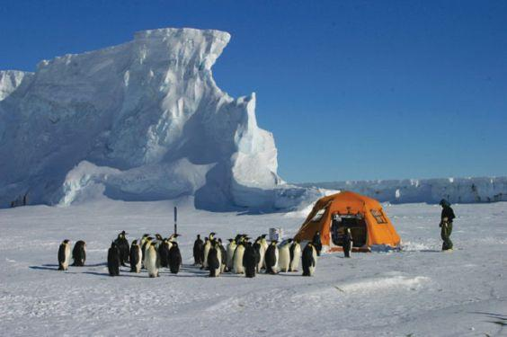

It Takes a Team to Save a Species

Cleaning
When oil spills strike, every second matters. Our team works on the frontlines—rescuing, cleaning, and giving penguins a second chance to survive.

Feeding
In a changing ocean, food is no longer guaranteed. We provide nourishment to weakened and displaced penguins—helping them recover their strength.

Monitoring
Protection doesn’t stop at rescue. We track, study, and monitor penguin populations to understand threats—and prevent the next crisis.

Rescued
12,000+
Penguins From oil spills and environmental disasters, every life counts.

Provided
250,000+
Meals to support recovery for penguins that cannot survive on their own.

Monitoring
35+
Worldwide research sites tracking, understanding, and preventing.
What we do. Why it matters.
When oil spills and pollution strike, every minute matters. Our emergency response teams are deployed immediately, reaching affected areas as quickly as possible to prevent further damage.
Rescuing penguins is a delicate and high-risk process. Covered in oil, their feathers lose insulation and waterproofing, exposing them to freezing temperatures. Our trained specialists carefully clean and treat each individual, removing toxic substances while minimizing stress and injury.
But cleaning is only the first step. Our goal is survival and recovery. By restoring their natural protection and stabilizing their condition, we give these penguins a second chance to return to the wild—where they belong.
Many rescued penguins arrive exhausted, malnourished, and unable to survive on their own. Without immediate care, they would not last long in the harsh Antarctic environment.
Our rehabilitation programs provide consistent nutrition, medical attention, and a safe space to recover. From hand-feeding to monitored swimming exercises, every step is designed to rebuild their strength and natural instincts.
Recovery is not rushed. Each penguin is carefully evaluated before release, ensuring they are strong enough to hunt, swim, and thrive independently. Only then are they returned to their natural habitat—fully prepared for life in the wild.
Protecting penguins is not just about responding to crises—it’s about preventing them. Long-term conservation requires deep understanding of the environment and the threats these animals face.
We continuously monitor penguin populations, migration patterns, and breeding success. By analyzing data on climate change, food availability, and human impact, we uncover trends that help us predict and respond to emerging risks.
This research drives real action. From influencing policy to improving conservation strategies, our work ensures that protection efforts are not temporary fixes—but lasting solutions that secure a future for penguins and the ecosystems they depend on.
Together, We Can Make a Difference
When disaster strikes, they are the first to arrive. Our field rescuers operate on the frontlines, often in harsh and unpredictable conditions, responding to oil spills, pollution events, and environmental emergencies.
Every rescue mission is urgent and dangerous. Penguins may be trapped in contaminated waters, weakened by exposure, or stranded in hostile environments. Our teams work quickly and carefully to locate, secure, and transport them to safety.
Their work is the critical first step in survival. Without rapid intervention, many of these animals would not make it. These rescuers are not just responding to crises—they are giving penguins a chance to live.
Behind every rescued penguin is a team dedicated to recovery. Our care specialists provide round-the-clock attention, ensuring each penguin receives the support it needs to survive.
From feeding and hydration to medical treatment and rehabilitation, every detail matters. Many penguins arrive weak, stressed, and unable to care for themselves, requiring patience, expertise, and constant monitoring.
Their goal is not just survival—but full recovery. Step by step, they help penguins regain strength, rebuild natural behaviors, and prepare to return to the wild where they can thrive once again.
Lasting protection begins with understanding. Our researchers and scientists study penguin behavior, ecosystems, and environmental changes to uncover the root causes of the challenges these animals face.
Through data collection, analysis, and long-term monitoring, they track population trends, migration patterns, and the impact of climate change and human activity. This knowledge allows us to move beyond reaction—and toward prevention.
Their work transforms information into action. By guiding conservation strategies and influencing policy, they help ensure that our efforts create long-term, sustainable impact for penguins and their habitats.
None of this is possible without you. Every rescue, every recovery, and every breakthrough is made possible through the support of people who care.
Whether through donations, sharing our mission, or making more sustainable choices in daily life, your actions directly contribute to protecting penguins and preserving their environment.
You are not just a supporter—you are part of the team. Together, we can turn awareness into action and create a future where penguins continue to thrive.